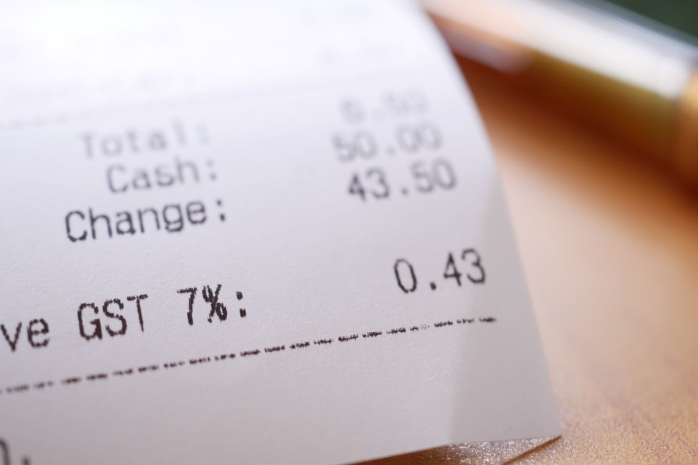
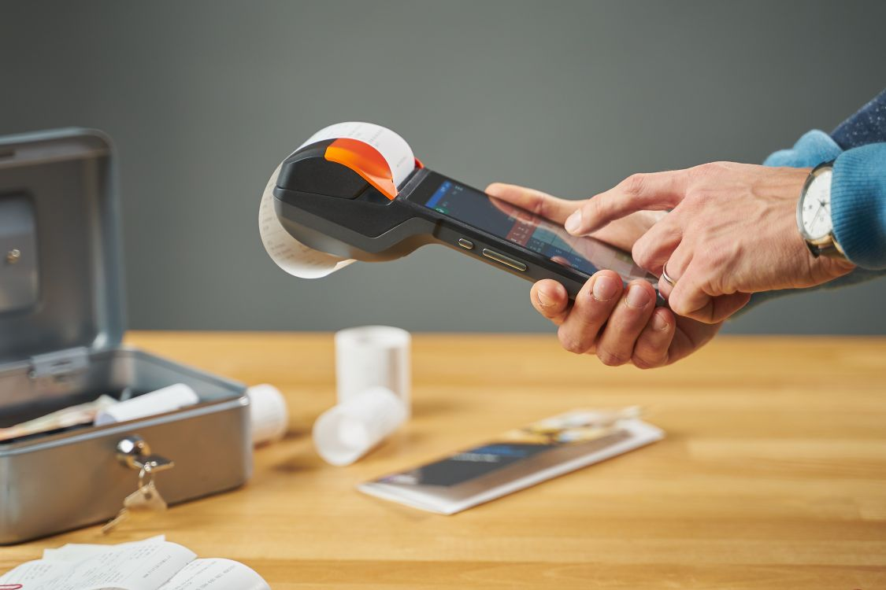
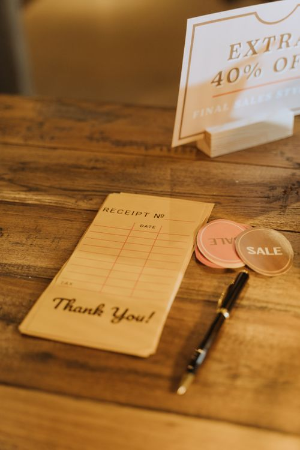

FBR E-Invoicing in Pakistan (2026): A Shopkeeper's Complete Guide

If you run a shop in Pakistan, 2026 brought a new word to your counter: e-invoicing. Maybe a supplier mentioned it. Maybe you saw a headline about FBR fines running into the millions. Maybe your accountant said, "ab har bill FBR ko jayega." And now you are wondering: does this apply to my shop? Do I need new machines? New software? What happens if I ignore it?
Take a breath. This guide explains FBR e-invoicing in plain language — no tax-law jargon, no scare tactics. You will learn what it actually is, who has to comply in 2026, what a compliant invoice looks like, and the simple steps to get ready. And here is the part most headlines skip: small shopkeepers may be fully exempt from the digital invoicing requirement under FBR's own special scheme. Let us get into it.
1. What FBR E-Invoicing Actually Is
Today, when you hand a customer a bill, that bill lives in your shop — on paper, in your register, or in your billing software. FBR has no way of knowing that sale happened. E-invoicing changes that.
Under the 2026 framework, covered businesses become "integrated enterprises": their billing systems connect directly to FBR's computerised system, and every sale is reported to FBR in real time, as it happens. Each invoice carries a QR code the customer can scan to verify it against FBR's records — similar to the POS invoice verification FBR already runs through its Tax Asaan app.
The purpose is straightforward: stop sales from disappearing off the books. If every invoice is visible to FBR the moment it is issued, under-reporting becomes much harder. This is the same logic behind FBR's earlier POS integration drive — by March 2026, over 12,800 major retailers had already linked their point-of-sale systems to FBR, and the board plans to bring 40,000 large retailers into the net over the next two years.
2. Who Must Comply in 2026 — and Who Does Not
This is the part that matters most, so read it carefully. E-invoicing is not a blanket rule for every shop in Pakistan. It targets specific categories.
Businesses in the net
Under FBR's 2026 notifications (including SRO 288(I)/2026), the following must issue real-time, verifiable e-invoices for every taxable supply:
- Tier-1 retailers — large retailers already being integrated with FBR's POS system
- Restaurants, hotels, marriage halls, and marquees
- Retailers who are also manufacturers, wholesalers, or importers — "manufacturer-cum-retailers," "wholesaler-cum-retailers," and "importer-cum-retailers"
- Courier and cargo services
- Private hospitals, clinics, labs, and diagnostic centres
- Beauty parlours, gyms, and personal-care businesses
- Private schools, colleges, and institutes above specified thresholds
For these businesses, the rules are strict: no supply may be made except through integrated outlets, POS systems, or e-invoicing machines; invoice data must be transmitted to FBR in real time; and electronic records must be kept for six years.
The penalties are real: FBR has reported fines ranging from Rs 500,000 to Rs 3 million for POS-system violations, with business closure as a possible consequence. This is not a rule to discover during an inspection.
The small-shop exception

Now the good news. In 2026, FBR introduced a special tax procedure for small shopkeepers (SRO 1166(I)/2026) — and under it, eligible small shopkeepers are exempt from installing a POS system or digital invoicing infrastructure. The scheme offers simplified filing, relief from certain withholding and minimum-tax provisions, and a "green plate" — a compliant-shopkeeper QR plate displayed outside the shop, which generally protects the shop from routine field visits by tax officers.
So the honest answer to "does e-invoicing apply to my shop?" is: it depends on your size and category. A kiryana store or small general store operating under the small-shopkeeper scheme is in a very different position from a large retailer or a restaurant chain. Do not let anyone sell you expensive "FBR integration" before you know which category you fall into.
3. What an FBR-Compliant Invoice Must Show
Whether or not you are in the mandatory net today, every shop benefits from invoices that look the way FBR expects them to look. A proper tax invoice carries:
- Your business name, address, and NTN/STRN — the tax identity FBR knows you by
- A unique, sequential invoice number — no gaps, no duplicates, no "bill 1" written by hand ten times
- Date and time of the sale
- Item-wise detail — what was sold, how much, at what rate
- Sales tax shown separately — the tax amount must be visible as its own line, not buried in the total
- The grand total
- A QR code for verification — required for integrated enterprises; good practice for everyone else
Compare that with the typical handwritten bill — "2 cheezen, Rs 450" — and you can see why FBR wants this documented. An itemized invoice with tax shown separately is not just compliance; it is also the record your accountant needs at filing time, and the proof your customer needs for returns.
4. How E-Invoicing Works at the Counter

For a business in the mandatory net, the flow at the counter looks like this:
- Ring up the sale in billing software connected to FBR's system.
- The software generates the e-invoice and sends its data to FBR in real time — before or as the bill is handed to the customer.
- The invoice prints with a QR code the customer can scan to verify it against FBR's records.
- A digital copy is stored automatically — part of the six-year electronic record the law requires.
One practical consequence: unlike ordinary offline billing, the e-invoice transmission needs an internet connection at the moment of sale. That is a real operational change for shops used to billing through power cuts and dead signals — and one more reason to keep a reliable connection at the counter if you fall in a notified category.
5. The Penalties Are Real — But So Is the Confusion
Here is an uncomfortable truth about 2026: the combination of real fines and vague understanding has created a small industry of fear. Shopkeepers who are not even in the notified categories are being told they urgently need expensive "FBR-approved" systems. Before you spend a rupee on that, do this instead:
Before buying anything, answer these three questions:
- Am I a Tier-1 retailer or in a notified sector? If your shop is a small independent store, the answer is very likely no.
- Am I eligible for the small-shopkeeper special procedure? Ask your accountant or check fbr.gov.pk — the exemption from POS/digital invoicing is written into SRO 1166(I)/2026.
- Are my invoices proper tax invoices anyway? Itemized, sequentially numbered, tax shown separately, digitally stored. If yes, you are already most of the way to whatever FBR asks next.
FBR's rules are still evolving — draft chapters, new SROs, and phased rollouts are the norm, not the exception. Treat any "final deadline" you hear on WhatsApp with healthy suspicion and confirm it from an official source or your tax consultant.
6. How to Get Ready in 2026: 5 Practical Steps

Whatever category you fall into, these five steps put you on solid ground:
Step 1 — Know your status
Are you a Tier-1 retailer, in a notified sector, or a small shopkeeper? This single answer decides everything else. Your accountant can confirm it in one conversation.
Step 2 — Get your registrations in order
Make sure your NTN is active, and your STRN (sales tax registration) if you are registered for sales tax. An e-invoice is only as valid as the tax identity behind it.
Step 3 — Switch to proper digital invoicing
Move off handwritten bills to billing software that prints itemized tax invoices with sequential numbering and stores every sale digitally. This is the foundation — notified businesses need it for real-time transmission, and everyone else needs it for clean records and painless tax filing. If you are still deciding, our guide on choosing POS software in Pakistan walks through what to look for, and why digital billing matters covers the business case beyond compliance.
Step 4 — If you are in a notified category, integrate properly
Talk to a licensed integrator about connecting your POS to FBR's system — PRAL, FBR's own technology arm, provides integration services to taxpayers free of cost under the framework. Only licensed providers can do this integration, so verify the license before signing anything.
Step 5 — If you are a small shopkeeper, use the simple path
Look into the special procedure for small shopkeepers and the green-plate system. Simplified filing plus exemption from POS/digital invoicing is a genuine relief — take it, and keep your invoices clean anyway. Good daily records, like the day-closing habit, make any future compliance step ten times easier.
The Bottom Line
FBR e-invoicing is about one thing: making every sale visible. For large retailers and notified sectors, real-time invoice reporting to FBR is mandatory in 2026, with serious fines for non-compliance. For small shopkeepers, FBR's own special scheme offers a simpler path — simplified filing, exemption from POS and digital invoicing, and a green plate that keeps routine inspections away.
The worst strategy is ignoring the whole thing. The second-worst is panicking and buying things you do not need. The right strategy is boring: know your category, get your registrations straight, and run your shop on proper digital invoices with clean records. Do that, and whatever FBR announces next becomes a settings change — not a crisis.
Note: tax rules change frequently. This guide reflects the public position as of October 2026; confirm your category and obligations with your tax consultant or fbr.gov.pk before acting.
Photo credits: Hero photo (cash register printing receipt) by GOWTHAM AGM · Receipt close-up photo by Towfiqu barbhuiya · Receipt printer photo by Hook Tell · Receipt and counter photo by cottonbro studio — all via Pexels.
Proper invoices, ready for whatever FBR asks next.
shopcos soft prints clean, itemized tax invoices with sequential numbering and keeps every sale digitally recorded for years — so your accountant gets perfect records and any compliance change becomes a settings update, not a crisis. Try it free for 30 days on your own counter.
Start 30-day Free TrialQuestions? WhatsApp us: +92 326 4025618